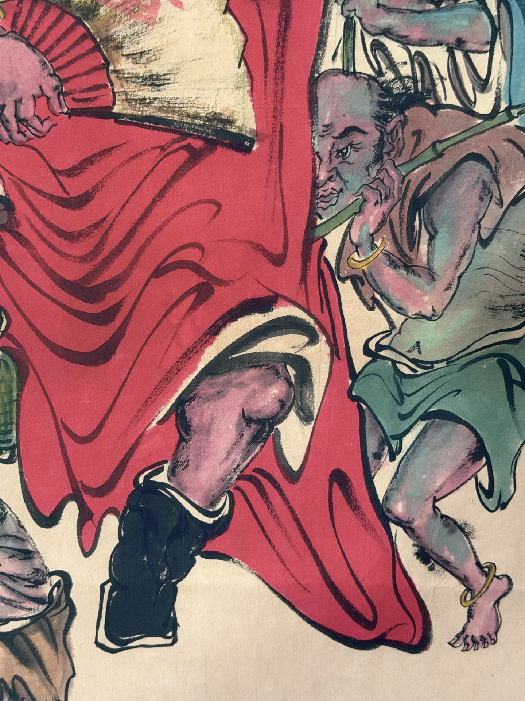
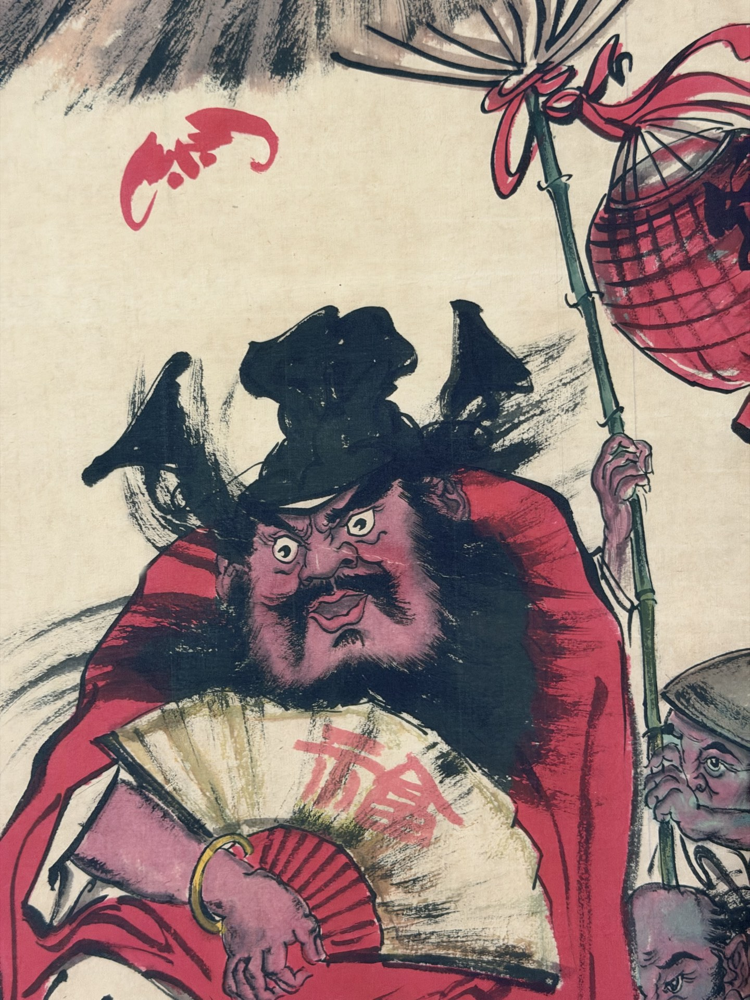

かけじく / ちゅうどう
掛軸・中堂
壁面に掛けて鑑賞する縦長の形式。表装を含めて一つの作品空間をつくります。
中国書画には「掛ける」「手で開く」「冊子として見る」「複数幅で構成する」など、鑑賞行為そのものが異なる多様な形式があります。
壁面に掛けて鑑賞する縦長の形式。表装を含めて一つの作品空間をつくります。

横長の画面を手元で少しずつ開き、時間の流れとともに鑑賞する形式です。

小さな画面を冊子や組物としてまとめる形式。近距離で細部を楽しみます。

複数の縦長作品を一組として構成。四季・花鳥・山水などの連作に向きます。

横方向に展開する掛け作品。壁面に広がりを与えます。

書そのものを鑑賞する作品。中堂、横幅、対聯、冊頁など多様な形式があります。

まだ表装されていない画面本体。好みの表装や額装に仕立てることができます。

二幅を対にして掛ける書画形式。門聯・詩句などで左右の対応を楽しみます。

扇形の画面に描く小品形式。独特の弧形構図が特徴です。

複数作品や冊頁などを箱に納めたセット。保管と贈答にも適した形です。
同じ絵でも、掛軸に仕立てるか、手巻にするか、冊頁にするかで見る距離・時間・空間が変わります。Retro日和では商品ごとに形式を明記し、今後は表装・保存・飾り方の解説も拡充します。